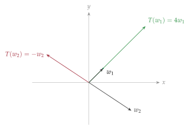

Para arrancarUna misma transformación puede «disfrazarse» de matrices muy distintas según la base que uses. Las matrices semejantes son la misma transformación con distinto disfraz.
Una transformación lineal T:V→W es una regla abstracta; una matriz es una tabla de números con la que se puede calcular. En el capítulo sobre coordenadas vimos que, fijada una base, los vectores de un espacio de dimensión finita se convierten en columnas de números. Este capítulo hace lo mismo con las transformaciones: fijadas una base del espacio de salida y otra del de llegada, T se convierte en una matriz AT, y aplicar T equivale a multiplicar por AT. Las propiedades de T (su núcleo, su imagen, su invertibilidad, su composición con otras transformaciones) se leen entonces en la matriz, y los métodos de la eliminación de Gauss-Jordan se vuelven herramientas para estudiar transformaciones.
Pero la matriz depende de las bases elegidas. La segunda mitad del capítulo estudia qué le ocurre a AT cuando se cambia de base, lo que conduce al concepto de matrices semejantes y a la pregunta que ocupará los capítulos siguientes: dada T:V→V, ¿existe una base en la que AT sea diagonal?
En todo el capítulo los espacios vectoriales son reales y de dimensión finita, y las bases son listas ordenadas. Usaremos sin más aviso que una transformación lineal respeta las combinaciones lineales: T(a1v1+⋯+akvk)=a1T(v1)+⋯+akT(vk); y que la aplicación v↦[v]B es lineal y biyectiva de V sobre Rn (la aplicación coordenadas es un isomorfismo).
9.1 La matriz de una transformación lineal
Sea T:V→W lineal, con B1={v1,…,vn} base de V y B2={w1,…,wm} base de W. Un vector v=a1v1+⋯+anvn se transforma en T(v)=a1T(v1)+⋯+anT(vn): basta conocer las n imágenes T(vj) para conocer T. Y cada T(vj) es un vector de W, que tiene coordenadas respecto de B2. Esos n vectores columna de Rm contienen toda la información de T, y se agrupan en una matriz.
Sea T:V→W lineal, B1={v1,…,vn} una base de V y B2={w1,…,wm} una base de W. La matriz de T respecto de las bases B1 y B2 es la matriz m×n cuyas columnas son los vectores de coordenadas, respecto de B2, de las imágenes de los vectores de B1: AT=([T(v1)]B2[T(v2)]B2⋯[T(vn)]B2). Si V=W y se usa la misma base B en la salida y en la llegada, se habla de la matriz de T respecto de B, y se escribe a veces ATB o [T]B cuando hay que indicar la base.
Nota la regla mnemotécnica: la columna j se obtiene aplicando T al j-ésimo vector de la base de salida y escribiendo el resultado en la base de llegada. La matriz tiene tantas columnas como la dimensión de V y tantas filas como la de W. Cuando en la notación AT no se indican las bases, se sobreentiende que están fijadas de antemano.
El siguiente teorema justifica la definición: la matriz AT hace exactamente lo que se le pide, esto es, transforma las coordenadas de v en las coordenadas de T(v).
Sea T:V→W lineal, con bases B1 de V y B2 de W, y sea AT su matriz. Entonces:
a)[T(v)]B2=AT[v]B1 para todo v∈V.
b)AT es la única matriz m×n con esa propiedad: si M es una matriz con [T(v)]B2=M[v]B1 para todo v∈V, entonces M=AT.
Demostraciónmostrar
a) Sea v∈V y sea [v]B1=(a1,…,an)⊤, es decir, v=a1v1+⋯+anvn. Por la linealidad de T, T(v)=a1T(v1)+a2T(v2)+⋯+anT(vn). Como la aplicación coordenadas respecto de B2 es lineal, [T(v)]B2=a1[T(v1)]B2+a2[T(v2)]B2+⋯+an[T(vn)]B2. El miembro derecho es una combinación lineal de las columnas de AT, con coeficientes a1,…,an; por la definición del producto de una matriz por un vector, eso es AT(a1,…,an)⊤=AT[v]B1.
b) Sea M con [T(v)]B2=M[v]B1 para todo v. Tomando v=vj se tiene [vj]B1=ej (el j-ésimo vector canónico de Rn, pues vj=0⋅v1+⋯+1⋅vj+⋯), de modo que Mej=[T(vj)]B2. Pero Mej es la j-ésima columna de M, y [T(vj)]B2 es la j-ésima columna de AT. Las columnas coinciden una a una, luego M=AT.
La parte (b) será la herramienta para identificar matrices en las demostraciones que siguen: para probar que una matriz es AT basta comprobar que cumple la fórmula de (a) para todo v.
La igualdad (a) se resume en un diagrama: dos caminos que van de v a [T(v)]B2 y que dan el mismo resultado. O bien se aplica T y luego se toman las coordenadas en B2; o bien se toman primero las coordenadas en B1 y luego se multiplica por AT.
Diagrama conmutativo de la representación matricial: [T(v)]B2=AT[v]B1.
Observación · Con las bases canónicas se recupera la matriz de siempre
Sea T:Rn→Rm lineal y sean En={e1,…,en}, Em las bases canónicas. Como [x]E=x para todo vector de Rk, la definición 9.1 da AT=(T(e1)T(e2)⋯T(en)), y el teorema 9.2 se lee T(v)=ATv para todo v∈Rn. Es la matriz estándar de T, la que se construye “poniendo las imágenes de los vectores canónicos como columnas”. Por la unicidad (parte b) es la única matriz con T(v)=Av para todo v.
Dos cuidados. Primero, la fórmula T(v)=Av solo es válida en Rn→Rm y con las bases canónicas; en un espacio como Pn o M2×2, o con otra base, lo que vale es [T(v)]B2=AT[v]B1, con coordenadas. Segundo, la matriz cambia con las bases: una misma T tiene muchas matrices, una por cada par de bases.
Halla la matriz estándar AT de T(x,y,z)=(x−2y,2x+y) y verifica que T(v)=ATv.
Soluciónintenta primero
Se calculan las imágenes de los vectores canónicos: T(e1)=(12),T(e2)=(−21),T(e3)=(00). Colocadas como columnas, AT=(12−2100).Verificación. Para v=(x,y,z), ATxyz=(x−2y+0⋅z2x+y+0⋅z)=(x−2y2x+y)=T(x,y,z). La tercera columna es nula porque T no depende de z.
Con una base que no es la canónica hay que resolver, para cada vector de la base de salida, un sistema para hallar las coordenadas de su imagen. En el siguiente ejemplo se usan dos elecciones de B2 para ver cómo cambia la matriz.
Sea T:R2→R2, T(x,y)=(x+y,2x−y), y sea B1={v1,v2}={(1,2),(−1,1)}.
a) Halla la matriz de T respecto de B1 y de la base canónica B2=E.
b) Halla la matriz de T respecto de B1 y de B2′={(1,1),(1,−1)}.
c) Para v=(2,1) halla T(v) directamente y con la matriz de cada inciso.
Soluciónintenta primero
Primero las imágenes: T(v1)=T(1,2)=(3,0) y T(v2)=T(−1,1)=(0,−3).
a) Como B2 es la base canónica, las coordenadas de T(vj) son sus entradas: AT=(300−3).
b) Hay que escribir (3,0)=α(1,1)+β(1,−1), es decir, α+β=3 y α−β=0, de donde α=β=23. Y (0,−3)=α(1,1)+β(1,−1) da α+β=0, α−β=−3, luego α=−23, β=23. Entonces AT′=(23−232323).
c) Directamente: T(2,1)=(3,3). Con las matrices se necesita [v]B1: de (2,1)=α(1,2)+β(−1,1) se obtiene α−β=2, 2α+β=1; sumando, 3α=3, luego α=1, β=−1, y [v]B1=(1,−1)⊤. Entonces [T(v)]E=AT[v]B1=(300−3)(1−1)=(33)=T(v),[T(v)]B2′=AT′[v]B1=(23−232323)(1−1)=(30), y en efecto 3(1,1)+0(1,−1)=(3,3).
Los espacios de polinomios y de matrices se tratan igual, con las bases canónicas de esos espacios.
Sea D:P2→P1, D(p)=p′. Halla su matriz respecto de B1={1,x,x2} y B2={1,x}; verifica que [D(p)]B2=AT[p]B1 para p=a+bx+cx2; y halla la matriz respecto de B1 y B2′={1+x,1−x}.
Soluciónintenta primero
Las imágenes de la base de salida son D(1)=0, D(x)=1, D(x2)=2x. En B2={1,x}: [0]=(0,0)⊤, [1]=(1,0)⊤, [2x]=(0,2)⊤. Por tanto AT=(001002).Verificación. Si p=a+bx+cx2, entonces [p]B1=(a,b,c)⊤ y D(p)=b+2cx, con [D(p)]B2=(b,2c)⊤. Por otro lado ATabc=(0⋅a+1⋅b+0⋅c0⋅a+0⋅b+2⋅c)=(b2c). Coinciden.
Otra base de llegada. Para B2′={1+x,1−x} hay que escribir α(1+x)+β(1−x)=α+β+(α−β)x. Entonces 0=0(1+x)+0(1−x); 1 requiere α+β=1, α−β=0, o sea 21,21; y 2x requiere α+β=0, α−β=2, o sea 1,−1. Así AT′=(0211021−1). Para comprobar, AT′(a,b,c)⊤=(2b+c,2b−c)⊤, y en efecto (2b+c)(1+x)+(2b−c)(1−x)=b+2cx=D(p). El mismo operador tiene matrices distintas para bases distintas; la primera es la más simple, por eso se prefieren las bases canónicas.
Sea M=(1224) y T:M2×2→M2×2, T(X)=MX. Halla AT respecto de la base canónica {E11,E12,E21,E22} en la salida y en la llegada.
Soluciónintenta primero
Se calcula T(Eij)=MEij. Recuerda que [X]=(x11,x12,x21,x22)⊤ para X=(x11x21x12x22). T(E11)T(E21)=(1200)⇒(1,0,2,0)⊤,=(2400)⇒(2,0,4,0)⊤,T(E12)T(E22)=(0012)⇒(0,1,0,2)⊤,=(0024)⇒(0,2,0,4)⊤. Por tanto AT=1020010220400204. Esta matriz se usará en el ejemplo 9.8.
9.2 Núcleo, imagen, rango y nulidad leídos en AT
Como AT “es” T en coordenadas, el núcleo y la imagen de T deben corresponder al espacio nulo y al espacio columna de AT. El siguiente teorema lo precisa, y con él el estudio de una transformación se reduce a un problema de eliminación gaussiana.
Sea T:V→W lineal, con dimV=n, bases B1 de V y B2 de W, y A=AT. Entonces:
a)v∈nuT⟺[v]B1∈NA. Así, si x1,…,xk es una base de NA y ui∈V es el vector con [ui]B1=xi, entonces {u1,…,uk} es una base de nuT.
b)w∈imT⟺[w]B2∈CA. Así, si y1,…,yr es una base de CA y zi∈W tiene [zi]B2=yi, entonces {z1,…,zr} es una base de imT.
c)ν(T)=ν(A) y ρ(T)=ρ(A); en particular ν(T)+ρ(T)=n.
Demostraciónmostrar
a) Sea v∈V. Un vector de W es cero si y solo si su vector de coordenadas es cero (la aplicación coordenadas es inyectiva y lineal). Por el teorema 9.2, v∈nuT⟺T(v)=0⟺[T(v)]B2=0⟺A[v]B1=0⟺[v]B1∈NA. Es decir, la aplicación coordenadas [⋅]B1 lleva nuT dentro de NA, y como es biyectiva de V sobre Rn y la equivalencia vale en ambos sentidos, su restricción es una biyección lineal de nuT sobre NA. Un isomorfismo lleva bases en bases, lo que da la afirmación sobre u1,…,uk.
b) Si w=T(v), entonces [w]B2=A[v]B1 es combinación lineal de las columnas de A, o sea, está en CA. Recíprocamente, si [w]B2=y∈CA, existe x∈Rn con Ax=y; sea v∈V el vector con [v]B1=x. Entonces [T(v)]B2=Ax=y=[w]B2, y como las coordenadas determinan al vector, w=T(v)∈imT. La restricción de [⋅]B2 a imT es entonces una biyección lineal sobre CA, y lleva bases en bases.
c) De (a) y (b), ν(T)=dimnuT=dimNA=ν(A) y ρ(T)=dimimT=dimCA=ρ(A). Como A tiene n columnas, ν(A)+ρ(A)=n (teorema de la dimensión para matrices), y por tanto ν(T)+ρ(T)=n=dimV.
Las partes (c) dicen que el rango y la nulidad de AT no dependen de las bases elegidas: valen lo mismo que ρ(T) y ν(T), que se definen sin bases. Así, dos matrices de la misma transformación respecto de bases distintas tienen el mismo rango. El teorema 9.27 dará esta conclusión de otra manera, al hablar de matrices semejantes.
Con la matriz AT del ejemplo 9.6, halla una base del núcleo y una de la imagen de T, y verifica el teorema de la dimensión.
Soluciónintenta primero
Se reduce AT. Con F3→F3−2F1 y F4→F4−2F2: 1020010220400204→1000010020000200. Ya está escalonada reducida. El rango es 2, luego ρ(T)=2 y ν(T)=4−2=2.
Núcleo. El sistema ATx=0 es x1+2x3=0, x2+2x4=0, con x3,x4 libres: x=x3(−2,0,1,0)⊤+x4(0,−2,0,1)⊤. Interpretando las columnas como matrices (por el teorema 9.7), nuT=gen{(−2100),(00−21)}. Comprobación: M(−2100)=(−2+2−4+400)=0. Es decir, el núcleo está formado por las matrices cuyas columnas están en el núcleo de M, que es la recta generada por (−2,1).
Imagen. Las columnas pivote de AT (la primera y la segunda) forman una base de CA: (1,0,2,0)⊤ y (0,1,0,2)⊤. Por tanto imT=gen{(1200),(0012)}, las matrices cuyas columnas son múltiplos de (1,2).
Dimensiones.ν(T)+ρ(T)=2+2=4=dimM2×2.
Ejemplo 9.9· Dos transformaciones entre espacios de polinomios
a)T:P3→P2, T(a0+a1x+a2x2+a3x3)=a1+a2x2.
b)S:P2→P3, (Sp)(x)=xp(x).
Halla la matriz de cada una respecto de las bases canónicas, y con ella su núcleo y su imagen.
Soluciónintenta primero
a) Las bases son {1,x,x2,x3} y {1,x,x2}. Como T(1)=0, T(x)=1, T(x2)=x2, T(x3)=0, AT=000100001000. Está ya en forma escalonada por filas (tras reordenar filas, con pivotes en las columnas 2 y 3): ρ(T)=2, ν(T)=4−2=2. El sistema ATx=0 es x2=0, x3=0 con x1,x4 libres, luego NA=gen{e1,e4} y nuT=gen{1,x3}. Las columnas pivote son la 2 y la 3, es decir, (1,0,0)⊤ y (0,0,1)⊤, que corresponden a 1 y x2: imT=gen{1,x2}={α+βx2}. En particular T no es sobreyectiva (no alcanza a x) ni inyectiva.
b) Las bases son {1,x,x2} y {1,x,x2,x3}. Como S(1)=x, S(x)=x2, S(x2)=x3, AS=010000100001. Las tres columnas son independientes: ρ(S)=3 y ν(S)=0. Luego nuS={0} (S es inyectiva) e imS=gen{x,x2,x3}, los polinomios de grado a lo sumo 3 sin término independiente. S no es sobreyectiva porque dimP2=3<4=dimP3.
Sean T:U→V y S:V→W transformaciones lineales. La composición de S con T es la función S∘T:U→W definida por (S∘T)(u)=S(T(u)) para todo u∈U.
Se aplica primero T y después S; el orden de escritura es el de las funciones, de derecha a izquierda. Para que la composición esté definida, la llegada de T debe ser el espacio de salida de S.
Sean T:U→V y S:V→W lineales, y sean B1, B2, B3 bases de U, V, W, respectivamente. Sean AT la matriz de T respecto de B1,B2 y AS la de S respecto de B2,B3. Entonces S∘T es lineal y su matriz respecto de B1,B3 es AS∘T=ASAT.
Demostraciónmostrar
Linealidad. Para u,u′∈U y c∈R, usando la linealidad de T y luego la de S, (S∘T)(u+cu′)=S(T(u)+cT(u′))=S(T(u))+cS(T(u′))=(S∘T)(u)+c(S∘T)(u′).
Matriz. Sea u∈U. Aplicando el teorema 9.2 primero a S (con el vector T(u)∈V) y luego a T, [(S∘T)(u)]B3=[S(T(u))]B3=AS[T(u)]B2=AS(AT[u]B1)=(ASAT)[u]B1. Así, ASAT cumple la propiedad que caracteriza a la matriz de S∘T respecto de B1,B3, y por la unicidad (parte b del teorema 9.2), AS∘T=ASAT.
Las dimensiones cuadran: si dimU=n, dimV=m, dimW=p, entonces AT es m×n, AS es p×m y el producto ASAT es p×n, el tamaño de la matriz de una transformación de U en W. La regla dice: la composición de transformaciones es el producto de sus matrices, y explica por qué el producto de matrices se define como se define.
El orden importa
AS∘T=ASAT: la matriz de la transformación que se aplica primero queda a la derecha. Como el producto de matrices no es conmutativo, en general S∘T=T∘S (y muchas veces solo una de las dos composiciones está definida). Conviene leer el producto de derecha a izquierda, como se lee la composición: en ASAT[u]B1, primero actúa AT sobre las coordenadas y luego AS.
Sean T:R2→R3, T(x,y)=(x,2x−y,3x+4y) y S:R3→R4, S(x,y,z)=(2x+z,3y−z,x−y,x+y+z). Halla S∘T de dos maneras.
Soluciónintenta primero
Por sustitución. Con (x′,y′,z′)=T(x,y)=(x,2x−y,3x+4y): (S∘T)(x,y)=(2x′+z′,3y′−z′,x′−y′,x′+y′+z′)=(2x+(3x+4y),3(2x−y)−(3x+4y),x−(2x−y),x+(2x−y)+(3x+4y))=(5x+4y,3x−7y,−x+y,6x+3y).
Por matrices. Las matrices estándar son AT=1230−14,AS=201103−111−101, y por el teorema 9.11AS∘T=ASAT=2⋅1+0+1⋅30+3⋅2−31−2+01+2+30+0+1⋅40−3−40+1+00−1+4=53−164−713. Multiplicada por (x,y)⊤ da la misma fórmula, (5x+4y,3x−7y,−x+y,6x+3y).
Ejemplo 9.13· Las dos composiciones de dos operadores de R3
Sean T1(x,y,z)=(2x+y,0,x+z) y T2(x,y,z)=(x−y,z,y) de R3 en R3. Halla las matrices estándar de T2∘T1 y de T1∘T2.
Soluciónintenta primero
Las matrices estándar (columnas: imágenes de e1,e2,e3) son AT1=201100001,AT2=100−101010. Entonces AT2∘T1=AT2AT1=100−101010201100001=210100010,AT1∘T2=AT1AT2=201100001100−101010=201−200100. Las dos matrices son distintas: T2∘T1=T1∘T2. Como comprobación directa, (T2∘T1)(1,0,0)=T2(2,0,1)=(2,1,0) es la primera columna de AT2∘T1, mientras que (T1∘T2)(1,0,0)=T1(1,0,0)=(2,0,1) es la primera columna de la otra.
Una transformación lineal T:V→W es invertible si existe una función S:W→V tal que S∘T=IV y T∘S=IW, donde IV, IW son las identidades de V y W. Esa S es única y se llama la inversa de T: se escribe T−1.
La condición equivale a S(T(v))=v para todo v∈V y T(S(w))=w para todo w∈W; es decir, T es biyectiva y S es la función inversa. No toda transformación lineal es invertible (una que tenga núcleo no nulo, por ejemplo, no es inyectiva). Dos cosas hay que aclarar antes del teorema principal: que la inversa, si existe, es lineal (para poder hablar de su matriz), y qué relación hay con las dimensiones.
Si T:V→W es lineal e invertible, entonces T−1:W→V es lineal y dimV=dimW.
Demostraciónmostrar
Sean w,w′∈W y c∈R. Sean v=T−1(w) y v′=T−1(w′), de modo que T(v)=w y T(v′)=w′. Por la linealidad de T, T(v+cv′)=T(v)+cT(v′)=w+cw′. Aplicando T−1 a ambos lados, v+cv′=T−1(w+cw′), es decir, T−1(w+cw′)=T−1(w)+cT−1(w′). Luego T−1 es lineal. Además T es inyectiva (nuT={0}, porque T(v)=0=T(0) implica v=0 al aplicar T−1) y sobreyectiva, de modo que ν(T)=0, ρ(T)=dimW, y por el teorema de la dimensión dimV=ν(T)+ρ(T)=dimW.
Ahora sí, el criterio de invertibilidad en términos de matrices.
Sea T:V→W lineal, con dimV=dimW=n, y sea AT su matriz respecto de bases B1 de V y B2 de W (es una matriz cuadrada n×n). Entonces T es invertible si y solo si AT es invertible, y en ese caso la matriz de T−1 respecto de B2 y B1 es AT−1=(AT)−1.
Demostraciónmostrar
(⇒) Sea T invertible. Por el teorema anterior, T−1 es lineal, y podemos hablar de su matriz AT−1 respecto de B2 (salida) y B1 (llegada). Por el teorema 9.11, AT−1AT=AT−1∘T=AIV=In,ATAT−1=AT∘T−1=AIW=In, pues la matriz de la identidad respecto de una misma base es In (el vector vj se lleva en sí mismo y [vj]B1=ej). Por tanto AT es invertible con inversa AT−1.
(⇐) Sea AT invertible. Si v∈nuT, por el teorema 9.7, [v]B1∈NAT={0} (una matriz invertible tiene espacio nulo trivial), de donde [v]B1=0 y v=0. Entonces ν(T)=0, T es inyectiva, y ρ(T)=n−0=n=dimW: la imagen es un subespacio de W con la dimensión de W, es decir, imT=W y T es sobreyectiva. Así T es biyectiva; su función inversa es lineal por el teorema anterior, y T es invertible. La fórmula para AT−1 es la de la primera parte.
Para T:Rn→Rn y con bases canónicas: T es invertible ⟺detAT=0⟺ρ(AT)=n⟺nuT={0}. Para hallar la fórmula de T−1 basta invertir AT por Gauss-Jordan y escribir T−1(v)=AT−1v. Si dimV=dimW, T nunca es invertible. Con bases no canónicas hay que traducir el resultado: AT−1 actúa sobre coordenadas respecto de B2 y entrega coordenadas respecto de B1.
Muestra que T(x,y,z)=(2x+3y+z,3x+3y+z,2x+4y+z) es invertible y halla T−1.
Soluciónintenta primero
La matriz estándar es AT=232334111. Su determinante, por la primera fila, es 2(3⋅1−1⋅4)−3(3⋅1−1⋅2)+1(3⋅4−3⋅2)=2(−1)−3(1)+6=1=0, luego AT y T son invertibles. Para hallar AT−1 se reduce (AT∣I): 232334111100010001F2→F2−F1F3→F3−F12103011001−1−1010001F1→F1−3F32100011004−1−1010−301F1→F1−2F20100011006−1−1−210−301. Reordenando las filas (la fila 2 arriba, la 3 en medio, la 1 abajo) queda (I∣AT−1) con AT−1=−1−1610−201−3. Por el teorema 9.16, esta es la matriz estándar de T−1, y T−1(x,y,z)=−1−1610−201−3xyz=(y−x,z−x,6x−2y−3z).Comprobación.T(T−1(x,y,z)): la primera componente es 2(y−x)+3(z−x)+(6x−2y−3z)=x⋅(−2−3+6)+y(2−2)+z(3−3)=x; la segunda es 3(y−x)+3(z−x)+(6x−2y−3z)=y; la tercera es 2(y−x)+4(z−x)+(6x−2y−3z)=z.
Ejemplo 9.18· ¿Para qué K no es invertible T:M2×2→P3?
Sea T(acbd)=(64−K2)ax3+(K−47)dx2+cx+(476−K2)b. Halla los valores de K para los que Tno es un isomorfismo.
Soluciónintenta primero
Como dimM2×2=4=dimP3, por el teorema 9.16 basta estudiar cuándo AT es invertible. Con las bases {E11,E12,E21,E22} y {1,x,x2,x3}, sea c1=64−K2, c2=476−K2: T(E11)=c1x3,T(E12)=c2,T(E21)=x,T(E22)=(K−47)x2, y, colocando en cada columna las coordenadas en {1,x,x2,x3}, AT=000c1c2000010000K−470. Cada fila y cada columna tiene una sola entrada no nula, así que detAT=± el producto de esas cuatro entradas. En concreto, la permutación que las asigna es un ciclo de longitud 4 (signo −1), y detAT=−(64−K2)(476−K2)(K−47).T no es isomorfismo si y solo si este producto es cero, es decir, si K2=64=1296 (K=±36), o K2=476 (K=±473=±103823), o K=47. Son cinco valores: K∈{36,−36,47,103823,−103823}.
Ejemplo 9.19· La matriz de T a partir de la de T−1
Sean B={v1,v2} y C={w1,w2} bases de V y W, y T:V→W lineal invertible con T−1(w1)=35v1+36v2 y T−1(w2)=34v1+35v2. Halla la matriz de T respecto de B y C.
Soluciónintenta primero
La matriz de T−1:W→V respecto de C (salida) y B (llegada) tiene por columnas [T−1(w1)]B=(35,36)⊤ y [T−1(w2)]B=(34,35)⊤: AT−1=(35363435),detAT−1=352−34⋅36=1225−1224=1. Por el teorema 9.16, AT=AT−1−1, y la inversa de una matriz 2×2 con determinante 1 es AT=(35−36−3435). En particular el elemento a11 de AT vale 35. (Verificación: (35363435)(35−36−3435)=(1225−12241260−1260−1190+1190−1224+1225)=I.)
9.5 Cambio de base y matrices semejantes
Un operador T:V→V tiene una matriz por cada base de V. ¿Cómo se relacionan? La respuesta usa la matriz de cambio de base PB→B′ de las coordenadas respecto de B a las de B′, con la propiedad PB→B′[x]B=[x]B′ y con (PB→B′)−1=PB′→B.
Sea T:V→V lineal, sean B y B′ bases de V, AB y AB′ las matrices de T respecto de B y de B′, y sea P=PB′→B. Entonces AB′=P−1ABP.
Demostraciónmostrar
Sea v∈V. Como P=PB′→B, se tiene P[v]B′=[v]B; y como P−1=PB→B′, para el vector T(v) se tiene [T(v)]B′=P−1[T(v)]B. Entonces, aplicando el teorema 9.2 con la base B, [T(v)]B′=P−1[T(v)]B=P−1AB[v]B=P−1ABP[v]B′. La matriz P−1ABP cumple entonces la propiedad del teorema 9.2 para las bases B′ y B′, y por unicidad, AB′=P−1ABP.
La fórmula se lee así: para hallar [T(v)]B′ desde [v]B′ se puede pasar primero a la base B (matriz P), aplicar AB, y volver a B′ (matriz P−1).
Observación · Bases distintas en salida y en llegada
El mismo argumento sirve para T:V→W con cambios de base en ambos espacios: si B1,B1′ son bases de V y B2,B2′ de W, entonces la matriz A′ respecto de B1′,B2′ y la matriz A respecto de B1,B2 cumplen A′=PB2→B2′APB1′→B1. En efecto, [T(v)]B2′=PB2→B2′[T(v)]B2=PB2→B2′A[v]B1=PB2→B2′APB1′→B1[v]B1′, y se concluye por unicidad. El teorema 9.20 es el caso V=W con la misma base en salida y en llegada.
Ejemplo 9.21· Una matriz diagonal en la base adecuada
Sea T:R2→R2, T(x,y)=(x+3y,2x+2y), sea B la base canónica y B′={w1,w2}={(1,1),(3,−2)}. Halla PB→B′, la matriz AT respecto de B y la matriz AT′ respecto de B′.
Soluciónintenta primero
Matriz respecto de B.T(e1)=(1,2) y T(e2)=(3,2), luego AT=(1232).Cambio de base. Las columnas de PB′→B son los vectores de B′ escritos en la canónica: PB′→B=(113−2), con determinante −2−3=−5. Su inversa es PB→B′=−51(−2−1−31)=51(213−1).Matriz respecto de B′, por el teorema 9.20 (con P=PB′→B): AT′=P−1ATP=51(213−1)(1232)(113−2). Primero ATP=(1+32+23−66−4)=(44−32), y luego AT′=51(213−1)(44−32)=51(2000−5)=(400−1).Comprobación directa.T(w1)=T(1,1)=(4,4)=4w1 y T(w2)=T(3,−2)=(−3,2)=−w2: las columnas de AT′ son (4,0)⊤ y (0,−1)⊤. La matriz respecto de B′ es diagonal, y AT=AT′.
Sea T(x,y)=(2x−2y,−x+3y) y B′={(1,0),(1,1)}. Halla AT respecto de la canónica B, la matriz P=PB′→B, y AT′ con el teorema 9.20.
Soluciónintenta primero
T(e1)=(2,−1), T(e2)=(−2,3): AT=(2−1−23). Las columnas de P son los vectores de B′: P=(1011), P−1=(10−11). Entonces AT′=P−1ATP=(10−11)(2−1−23)(1011).ATP=(2−12−2−1+3)=(2−102), y P−1(ATP)=(2+1−10−22)=(3−1−22). Comprobación: T(1,0)=(2,−1)=3(1,0)−1(1,1) y T(1,1)=(0,2)=−2(1,0)+2(1,1); las columnas coinciden con las de AT′.
Ejemplo 9.23· AT conocida en una base, se pide en otra
Sea T:R2→R2 lineal, B={(−3,2),(4,−2)} y B′={(−1,2),(2,−2)}, y supón que la matriz de T respecto de B es AT=(−2−377).
a) Halla AT′, la matriz respecto de B′.
b) Para el vector v con [v]B′=(−3,−1)⊤, halla [v]B, [T(v)]B y [T(v)]B′.
c) Halla una fórmula para T(x,y).
Soluciónintenta primero
a) Se necesita PB′→B. Sean B=(−324−2) y B′=(−122−2) las matrices cuyas columnas son los vectores de cada base (en la canónica). Como BPB′→B da las columnas de B′ en canónica, PB′→B=B−1B′. Con detB=6−8=−2, B−1=−21(−2−2−4−3)=(11223),PB′→B=(11223)(−122−2)=(32−2−1). Su inversa (determinante −3+4=1) es PB→B′=(−1−223). Comprobación de la primera columna: 3(−3,2)+2(4,−2)=(−1,2), el primer vector de B′. Por el teorema 9.20, con P=PB′→B, AT′=P−1ATP=(−1−223)(−2−377)(32−2−1).ATP=(−6+14−9+144−76−7)=(85−3−1) y AT′=(−1−223)(85−3−1)=(−8+10−16+153−26−3)=(2−113).
b)[v]B=PB′→B[v]B′=(32−2−1)(−3−1)=(−9+2−6+1)=(−7−5). Entonces [T(v)]B=AT[v]B=(−2−377)(−7−5)=(14−3521−35)=(−21−14),[T(v)]B′=AT′[v]B′=(2−113)(−3−1)=(−70). Comprobación: en la canónica v=−3(−1,2)−1(2,−2)=(1,−4); T(v)=−21(−3,2)−14(4,−2)=(63−56,−42+28)=(7,−14); y −7(−1,2)+0=(7,−14). Coinciden. Además, con PB→B′: PB→B′(−21,−14)⊤=(21−28,42−42)=(−7,0).
c) Sea B la matriz de columnas de B. Como [x]B=B−1x y [T(x)]B=AT[x]B, la matriz estándar es BATB−1: (−324−2)(−2−377)=(6−12−4+6−21+2814−14)=(−6270),(−6270)(11223)=(12−12+2214)=(12−234). Por tanto T(x,y)=(x−23y,2x+4y). Comprobación: T(−1,2)=(−1−3,−2+8)=(−4,6)=2(−1,2)−1(2,−2), la primera columna de AT′.
Matrices semejantes
El teorema 9.20 motiva la siguiente definición, ahora para matrices sin mención de transformaciones.
Sean A y B matrices n×n. Se dice que B es semejante a A (o similar a A) si existe una matriz invertible P tal que B=P−1AP.
Teorema 9.25· La semejanza es una relación de equivalencia
Para matrices n×n:
a)A es semejante a A.
b) Si B es semejante a A, entonces A es semejante a B. (Por eso se dice simplemente que A y B son semejantes.)
c) Si B es semejante a A y C es semejante a B, entonces C es semejante a A.
d)A y B son semejantes si y solo si existe una matriz invertible P con AP=PB.
Demostraciónmostrar
a)A=I−1AI.
b) Si B=P−1AP, multiplicando por P a la izquierda y por P−1 a la derecha, A=PBP−1=(P−1)−1B(P−1); luego A es semejante a B mediante la matriz invertible P−1.
c) Si B=P−1AP y C=Q−1BQ, entonces C=Q−1P−1APQ=(PQ)−1A(PQ) y PQ es invertible.
d) Si B=P−1AP, multiplicando por P a la izquierda, PB=AP. Recíprocamente, si AP=PB con P invertible, multiplicando por P−1 a la izquierda, B=P−1AP.
Que las matrices de un mismo operador en bases distintas sean semejantes es la parte fácil (teorema 9.20). La recíproca también es cierta, y da a la semejanza su significado geométrico.
(⇒) Sea B=P−1AP y sea T(x)=Ax, cuya matriz respecto de la base canónica E es A. Sean p1,…,pn las columnas de P; forman una base B′ de Rn, pues P es invertible. Como [pj]E=pj, la matriz de cambio de base es PB′→E=P. Por el teorema 9.20, la matriz de T respecto de B′ es P−1AP=B. Así A y B representan a T en las bases E y B′.
Las matrices semejantes comparten muchas propiedades, que son, entonces, propiedades de la transformación y no de la base con la que se la represente.
Sean A y B matrices n×n semejantes, B=P−1AP. Entonces:
a)detB=detA.
b)A es invertible si y solo si B es invertible.
c)ρ(A)=ρ(B) y ν(A)=ν(B).
d)trB=trA.
e)det(B−λI)=det(A−λI) para todo λ: A y B tienen el mismo polinomio característico y, por tanto, los mismos valores propios.
f)Bk=P−1AkP para todo entero k≥1.
Demostraciónmostrar
a) Por la multiplicatividad del determinante y det(P−1)=(detP)−1, detB=det(P−1)detAdetP=detP1detAdetP=detA.
b) Una matriz cuadrada es invertible si y solo si su determinante es no nulo; por (a), detA=0⟺detB=0.
c) Sea x∈Rn. Como P−1 es invertible, Bx=0⟺P−1APx=0⟺APx=0⟺Px∈NA. Luego x↦Px es una biyección lineal de NB sobre NA (su inversa es y↦P−1y), y ν(B)=ν(A). Por el teorema de la dimensión, ρ(B)=n−ν(B)=n−ν(A)=ρ(A).
d) Usaremos tr(XY)=tr(YX). En efecto, tr(XY)=∑i∑jxijyji=∑j∑iyjixij=tr(YX). Entonces, con X=P−1 y Y=AP, trB=tr(P−1(AP))=tr((AP)P−1)=trA.
e) Como P−1(λI)P=λI, se tiene B−λI=P−1AP−P−1(λI)P=P−1(A−λI)P, que es semejante a A−λI por definición, y se aplica (a).
f) Por inducción: B1=P−1AP; si Bk=P−1AkP, entonces Bk+1=BkB=P−1AkPP−1AP=P−1Ak+1P.
Por los teoremas 9.20 y 9.27, para T:V→V tiene sentido hablar del determinante, la traza, el rango y el polinomio característico de T: son los de cualquiera de sus matrices, y no dependen de la base elegida. Los invariantes sirven, sobre todo, para demostrar que dos matrices no son semejantes: si un invariante difiere, no lo son.
En cambio, el que todos los invariantes coincidan no basta para concluir que lo son. Las matrices I=(1001) y J=(1011) tienen determinante 1, traza 2, rango 2 y polinomio característico (1−λ)2, pero P−1IP=I=J para toda P invertible: J no es semejante a I.
Ejemplo 9.28· Decidir que dos matrices son semejantes
Sean A=(102−1) y B=(1−20−1). Muestra que B es semejante a A.
Soluciónintenta primero
Por el teorema 9.25 (d) se busca P invertible con AP=PB. Sea P=(acbd). Entonces AP=(a+2c−cb+2d−d),PB=(a−2bc−2d−b−d). Igualando entrada por entrada: a+2c=a−2b da c=−b; b+2d=−b da b=−d; −c=c−2d da c=d; y −d=−d es idéntica. Estas condiciones son compatibles: b=−d, c=d, con a y d libres. Con a=d=1, P=(11−11),detP=2=0. Comprobación: AP=(3−11−1)=PB (pues PB=(1+21−20+10−1)). Con P−1=21(1−111) se tiene P−1AP=21(1−111)(3−11−1)=21(2−40−2)=B. Luego B es semejante a A.
(Otro camino, que se justificará en los capítulos siguientes: ambas matrices tienen valores propios distintos 1 y −1; por eso las dos son semejantes a diag(1,−1) y, por transitividad, entre sí.)
Ejemplo 9.29· Decidir que dos matrices no son semejantes
Muestra que A=(1221) y B=(2112) no son semejantes.
Soluciónintenta primero
Se calculan invariantes. La traza ya los distingue, trA=1+1=2 y trB=2+2=4, y el determinante también: detA=1−4=−3 y detB=4−1=3. Como detA=detB, por el teorema 9.27 (a) A y B no son semejantes.
9.6 Bases en las que la matriz de T es diagonal
Dada T:V→V, ¿existe una base B′ para la cual AT′ sea diagonal? Una matriz diagonal es la más sencilla posible: su acción estira o encoge cada coordenada por separado. El siguiente resultado dice qué debe cumplir esa base.
Sea T:V→V lineal y B′={w1,…,wn} una base de V. La matriz de T respecto de B′ es diagonal, AT′=diag(d1,…,dn), si y solo si T(wj)=djwjpara j=1,…,n.
Demostraciónmostrar
La j-ésima columna de AT′ es [T(wj)]B′. Dicha columna es djej si y solo si T(wj)=0⋅w1+⋯+djwj+⋯+0⋅wn=djwj (unicidad de las coordenadas). Que esto ocurra para todo j es exactamente que AT′ sea diagonal con entradas dj.
Los vectores no nulos con T(w)=dw son los vectores propios de T, y los d sus valores propios; su estudio es el tema de los capítulos siguientes. Aquí solo adelantamos una idea para los casos de dimensión 2. En el ejemplo 9.21 la base B′={(1,1),(3,−2)} parecía caída del cielo. Se encuentra buscando w=0 con ATw=λw, es decir, (AT−λI)w=0 con solución no nula, lo que exige det(AT−λI)=0. Para AT=(1232): det(1−λ232−λ)=(1−λ)(2−λ)−6=λ2−3λ−4=(λ−4)(λ+1), y los valores λ=4,−1 son los de la diagonal de AT′. Para λ=4, (AT−4I)w=0 es −3w1+3w2=0, con solución (1,1); para λ=−1, 2w1+3w2=0, con solución (3,−2).

En la base B′={w1,w2}, T estira w1 por 4 y invierte w2: su matriz es diag(4,−1).
Sea T:M2×2→M2×2, T(X)=X⊤. Halla AT respecto de la base canónica y una base de M2×2 en la que la matriz de T sea diagonal.
Soluciónintenta primero
Respecto de {E11,E12,E21,E22}: T(E11)=E11, T(E12)=E21, T(E21)=E12, T(E22)=E22, luego AT=1000001001000001. No es diagonal. Consideremos la base B′={E11,E22,E12+E21,E12−E21} (formada por dos matrices canónicas, una simétrica y una antisimétrica; es base porque genera las cuatro Eij: E12=21[(E12+E21)+(E12−E21)], E21=21[(E12+E21)−(E12−E21)], y son cuatro). Se tiene T(E11)=E11,T(E22)=E22,T(E12+E21)=E12+E21,T(E12−E21)=E21−E12=−(E12−E21). Por el teorema 9.30, AT′=100001000010000−1. Como comprobación de los invariantes, trAT=1+0+0+1=2=trAT′ y detAT=−1=detAT′ (el determinante de AT es −1 porque intercambia dos filas de I).
Ejercicios propuestos
Halla la matriz de T:P2→P2, T(p)(x)=p(x+1), respecto de {1,x,x2}, y demuestra que es invertible calculando T−1 con la matriz.
Demuestra que T↦AT, de L(V,W) en Mm×n, cumple AT+S=AT+AS y AcT=cAT (mismas bases).
Sean T,S:V→V lineales. Muestra con un ejemplo en R2 que S∘T=T∘S y calcula ambas matrices.
Demuestra que si A y B son semejantes y A es invertible, entonces A−1 y B−1 son semejantes.
Demuestra que si A es semejante a B, entonces A⊤ es semejante a B⊤.
Decide si (2003) y (2013) son semejantes, justificando con los invariantes o exhibiendo una P.
Halla una base de R2 respecto de la cual la proyección ortogonal sobre la recta gen{(1,2)} tenga matriz diag(1,0).
Ojo, parcero: errores que veo en los parciales
«imágenes de la base como FILAS» → van como COLUMNAS
«semejantes ⇒ iguales» → comparten determinante, traza y valores propios, no las entradas
✦Practica activa
Retos para afianzar las ideas del capítulo: experimenta en el laboratorio y arma la demostración con los bloques en el orden correcto y caza el paso falso de un argumento.
🔬 Laboratorio · elige el siguiente pasoMatriz en otra base
🧩 Ordena la demostraciónSemejantes tienen el mismo determinante
Demuestra que si B=P−1AP, entonces detB=detA.
🔍 Encuentra el errorLa matriz de una transformación
Se busca la matriz estándar de T(x,y)=(2x+y,x−y).
✎ Repaso del capítulo
Matrices semejantes tienen el mismo…
det(P−1AP)=detP−1detAdetP=detA: el mismo determinante.
Si A y B son semejantes, tienen la misma traza.
tr(P−1AP)=tr(APP−1)=trA. Verdadero.
Matriz de T(x,y)=(y,x): ¿cuál es su determinante?
puedes escribir fracciones como 3/2
La matriz es (0110) y su determinante es 0⋅0−1⋅1=−1.